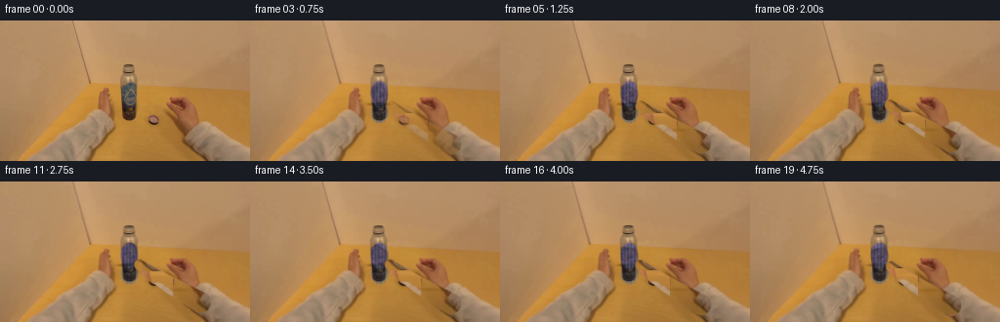
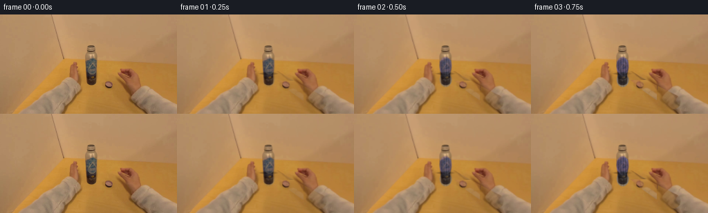
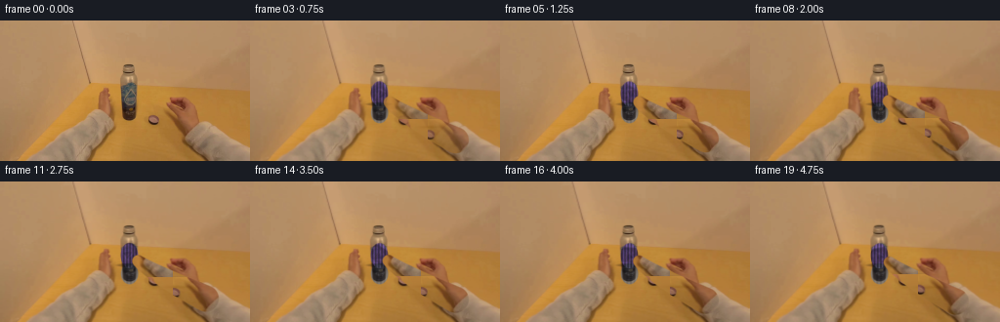
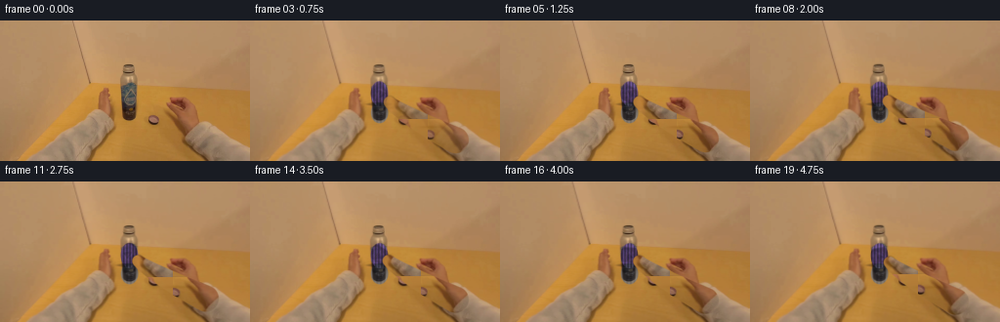
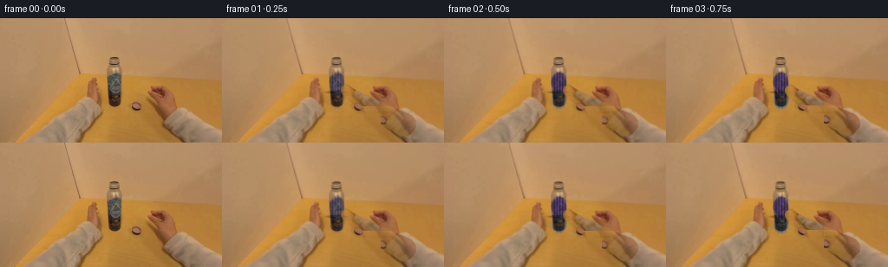

CODING AGENTS AS PIXEL WORLD MODELS
traex/DeepSeek-V4.1-Flash · common50_0014
点击播放 · 原生 RGB 像素
此结果可播放，但该运行尚未通过最终提交审核。页面展示不代表评测通过。
逐轮保存的候选
回放视频、检查图与代码变化。
每份候选均可单独播放。实际图片检查记录在下方工具轨迹中。
候选 01播放与检查图
点击播放 · 原生 RGB 像素


展开代码变化
--- 上一保存版本
+++ 本次保存版本
@@ -0,0 +1,193 @@
+from pathlib import Path
+
+import cv2
+import numpy as np
+from PIL import Image
+
+import artifact_io
+
+
+CASE_DIR = Path(__file__).resolve().parent
+N_FRAMES = 20
+FPS = 4
+WIDTH = 256
+HEIGHT = 144
+
+
+def smoothstep(value):
+ value = np.clip(value, 0.0, 1.0)
+ return value * value * (3.0 - 2.0 * value)
+
+
+def soft_ellipse(cx, cy, rx, ry, feather=1.8):
+ yy, xx = np.mgrid[:HEIGHT, :WIDTH].astype(np.float32)
+ radius = np.sqrt(((xx - cx) / rx) ** 2 + ((yy - cy) / ry) ** 2)
+ return smoothstep((1.0 + feather / min(rx, ry) - radius) / (feather / min(rx, ry)))
+
+
+def rounded_segment_mask(points, radii):
+ """Union of soft disks along a polyline, used for the approaching finger."""
+ yy, xx = np.mgrid[:HEIGHT, :WIDTH].astype(np.float32)
+ alpha = np.zeros((HEIGHT, WIDTH), np.float32)
+ for (px, py), radius in zip(points, radii):
+ distance = np.sqrt((xx - px) ** 2 + (yy - py) ** 2)
+ alpha = np.maximum(alpha, smoothstep((radius + 0.9 - distance) / 1.8))
+ return alpha
+
+
+def bezier_points(p0, p1, p2, count=42):
+ points = []
+ for step in range(count):
+ t = step / (count - 1)
+ point = (
+ (1.0 - t) ** 2 * p0[0] + 2.0 * (1.0 - t) * t * p1[0] + t**2 * p2[0],
+ (1.0 - t) ** 2 * p0[1] + 2.0 * (1.0 - t) * t * p1[1] + t**2 * p2[1],
+ )
+ points.append(point)
+ return points
+
+
+def make_finger(frame, phase, strength):
+ """Build a warm, textured index finger from pixels already present in the plate."""
+ tip_y = 86.0 + 1.4 * np.sin(phase * 2.0 * np.pi + 0.4)
+ tip = (143.3 + 0.9 * np.sin(phase * 2.0 * np.pi + 1.1), tip_y)
+ control = (160.0, 100.0 + 1.3 * np.sin(phase * 2.0 * np.pi + 0.9))
+ base = (205.0, 125.0 + 1.8 * np.sin(phase * 2.0 * np.pi + 1.4))
+ centerline = bezier_points(base, control, tip)
+ radii = np.linspace(10.8, 5.4, len(centerline))
+ mask = rounded_segment_mask(centerline, radii)
+
+ patch = frame[92:139, 162:226]
+ patch_height, patch_width = patch.shape[:2]
+ yy, xx = np.mgrid[:HEIGHT, :WIDTH]
+ tex_y = ((yy - 2 + (phase * 7.0)) % patch_height).astype(np.int32)
+ tex_x = ((xx + 9 + (phase * 11.0)) % patch_width).astype(np.int32)
+ texture = patch[tex_y, tex_x].astype(np.float32)
+
+ # Curvature shading: brighter along the upper edge, softly darker underneath.
+ ynorm = np.clip((yy - tip_y) / 42.0, 0.0, 1.0)
+ curve = 1.08 - 0.18 * ynorm
+ edge = 1.0 + 0.08 * np.exp(-((xx - (tip[0] + 0.8)) / 4.0) ** 2)
+ finger = texture * (curve * edge)[..., None]
+
+ # A soft knuckle crease and a narrow specular strip give the finger volume.
+ crease_y = 111.0 + 0.8 * np.sin(phase * 2.0 * np.pi)
+ crease = np.exp(-((yy - crease_y) / 1.7) ** 2) * np.exp(-((xx - 181.0) / 12.0) ** 2)
+ finger -= (crease * 12.0)[..., None]
+ highlight = np.exp(-((yy - (tip_y + 9.0)) / 2.0) ** 2) * np.exp(-((xx - 167.0) / 18.0) ** 2)
+ finger += (highlight * 10.0)[..., None] * np.array([1.0, 0.92, 0.80], np.float32)
+
+ # Contact shadow where the fingertip meets the cap.
+ shadow = np.exp(-(((xx - 143.5) / 5.5) ** 2 + ((yy - (tip_y + 2.5)) / 7.0) ** 2))
+ frame *= (1.0 - shadow * 0.16 * strength)[..., None]
+
+ alpha = (mask * strength)[..., None]
+ return frame * (1.0 - alpha) + np.clip(finger, 0.0, 255.0) * alpha
+
+
+def make_video(source):
+ frames = []
+ source_f = source.astype(np.float32)
+
+ for index in range(N_FRAMES):
+ if index == 0:
+ frames.append(source.copy())
+ continue
+
+ phase = index / (N_FRAMES - 1)
+ progress = smoothstep(phase)
+ frame = source_f.copy()
+
+ # A restrained handheld drift keeps the plate alive without destabilizing it.
+ sway_x = 0.38 * np.sin(index * 0.72)
+ sway_y = 0.25 * np.sin(index * 0.57 + 0.6)
+ matrix = np.float32([[1.0, 0.0, sway_x], [0.0, 1.0, sway_y]])
+ frame = cv2.warpAffine(
+ frame,
+ matrix,
+ (WIDTH, HEIGHT),
+ flags=cv2.INTER_LINEAR,
+ borderMode=cv2.BORDER_REFLECT_101,
+ )
+
+ cap_cx = 132.0
+ cap_cy = 74.4 + 1.2 * progress
+ cap_alpha = soft_ellipse(cap_cx, cap_cy, 8.4, 12.2, feather=1.4)
+ body_alpha = soft_ellipse(132.2, 94.1, 8.1, 9.8, feather=1.5)
+
+ # Rotate the cap's own pixels, then tint and ridge-light the result.
+ angle = 12.0 + 268.0 * progress
+ cap_matrix = cv2.getRotationMatrix2D((cap_cx, cap_cy), angle, 1.0)
+ rotated = cv2.warpAffine(
+ frame,
+ cap_matrix,
+ (WIDTH, HEIGHT),
+ flags=cv2.INTER_LINEAR,
+ borderMode=cv2.BORDER_REFLECT_101,
+ )
+ yy, xx = np.mgrid[:HEIGHT, :WIDTH].astype(np.float32)
+ cap_lum = rotated.mean(axis=2)
+ tint = cap_lum[..., None] * np.array([0.82, 0.73, 1.05], np.float32)
+ tint += np.array([14.0, 7.0, 24.0], np.float32)
+ ridges = 0.88 + 0.14 * np.cos(
+ 2.0 * np.pi * (xx - cap_cx) / 3.4 + np.deg2rad(angle) * 2.6
+ )
+ tint *= ridges[..., None]
+ top_light = np.exp(-((yy - (cap_cy - 9.1)) / 1.8) ** 2)
+ side_light = np.exp(-((xx - (cap_cx - 5.6)) / 1.7) ** 2)
+ tint += (top_light * 13.0 + side_light * 5.0)[..., None] * np.array(
+ [0.78, 0.70, 1.0], np.float32
+ )
+ tint_strength = 0.62 * smoothstep(index / 3.0)
+ frame = frame * (1.0 - cap_alpha[..., None] * tint_strength)
+ frame += tint * cap_alpha[..., None] * tint_strength
+
+ # The neck below the cap reads as brushed dark metal rather than skin.
+ body_lum = frame.mean(axis=2)
+ steel = body_lum[..., None] * np.array([0.93, 0.97, 1.08], np.float32)
+ steel += np.array([1.0, 4.0, 7.0], np.float32)
+ steel *= (0.92 + 0.08 * np.cos((xx - 128.0) * 1.7))[..., None]
+ body_strength = 0.58 * smoothstep(index / 3.0)
+ frame = frame * (1.0 - body_alpha[..., None] * body_strength)
+ frame += steel * body_alpha[..., None] * body_strength
+
+ seam = soft_ellipse(132.0, 85.3, 8.7, 1.3, feather=1.2)
+ frame *= (1.0 - seam * 0.26)[..., None]
+
+ # A small turn of the wrist accompanies the cap rotation.
+ finger_strength = 0.28 + 0.72 * smoothstep((index - 1) / 5.0)
+ frame = make_finger(frame, phase, finger_strength)
+
+ # Gentle exposure breathing ties the moving hand to the room lighting.
+ exposure = 1.0 + 0.012 * np.sin(index * 0.65)
+ frames.append(np.clip(frame * exposure, 0, 255).astype(np.uint8))
+
+ return np.stack(frames)
+
+
+def write_mp4(frames):
+ writer = cv2.VideoWriter(
+ str(CASE_DIR / "video.mp4"),
+ cv2.VideoWriter_fourcc(*"mp4v"),
+ FPS,
+ (WIDTH, HEIGHT),
+ )
+ if not writer.isOpened():
+ raise RuntimeError("OpenCV could not open an MP4 writer")
+ for frame in frames:
+ writer.write(cv2.cvtColor(frame, cv2.COLOR_RGB2BGR))
+ writer.release()
+
+
+def main():
+ source = np.asarray(Image.open(CASE_DIR / "first_frame.png").convert("RGB"), dtype=np.uint8)
+ assert source.shape == (HEIGHT, WIDTH, 3)
+ frames = make_video(source)
+ assert np.array_equal(frames[0], source)
+ artifact_io.save(frames, CASE_DIR)
+ write_mp4(frames)
+ print(f"saved {len(frames)} frames to {CASE_DIR}")
+
+
+if __name__ == "__main__":
+ main()
候选 02播放与检查图
点击播放 · 原生 RGB 像素

展开代码变化
--- 上一保存版本
+++ 本次保存版本
@@ -1,6 +1,8 @@
from pathlib import Path
+import subprocess
import cv2
+import imageio_ffmpeg
import numpy as np
from PIL import Image
@@ -25,13 +27,13 @@
return smoothstep((1.0 + feather / min(rx, ry) - radius) / (feather / min(rx, ry)))
-def rounded_segment_mask(points, radii):
+def rounded_segment_mask(points, radii, feather=1.8):
"""Union of soft disks along a polyline, used for the approaching finger."""
yy, xx = np.mgrid[:HEIGHT, :WIDTH].astype(np.float32)
alpha = np.zeros((HEIGHT, WIDTH), np.float32)
for (px, py), radius in zip(points, radii):
distance = np.sqrt((xx - px) ** 2 + (yy - py) ** 2)
- alpha = np.maximum(alpha, smoothstep((radius + 0.9 - distance) / 1.8))
+ alpha = np.maximum(alpha, smoothstep((radius + 0.9 - distance) / feather))
return alpha
@@ -49,15 +51,15 @@
def make_finger(frame, phase, strength):
"""Build a warm, textured index finger from pixels already present in the plate."""
- tip_y = 86.0 + 1.4 * np.sin(phase * 2.0 * np.pi + 0.4)
- tip = (143.3 + 0.9 * np.sin(phase * 2.0 * np.pi + 1.1), tip_y)
- control = (160.0, 100.0 + 1.3 * np.sin(phase * 2.0 * np.pi + 0.9))
- base = (205.0, 125.0 + 1.8 * np.sin(phase * 2.0 * np.pi + 1.4))
+ tip_y = 82.0 + 1.3 * np.sin(phase * 2.0 * np.pi + 0.4)
+ tip = (141.8 + 0.8 * np.sin(phase * 2.0 * np.pi + 1.1), tip_y)
+ control = (158.0, 96.0 + 1.2 * np.sin(phase * 2.0 * np.pi + 0.9))
+ base = (210.0, 121.0 + 1.7 * np.sin(phase * 2.0 * np.pi + 1.4))
centerline = bezier_points(base, control, tip)
- radii = np.linspace(10.8, 5.4, len(centerline))
+ radii = np.linspace(13.5, 6.1, len(centerline))
mask = rounded_segment_mask(centerline, radii)
- patch = frame[92:139, 162:226]
+ patch = frame[86:136, 156:220]
patch_height, patch_width = patch.shape[:2]
yy, xx = np.mgrid[:HEIGHT, :WIDTH]
tex_y = ((yy - 2 + (phase * 7.0)) % patch_height).astype(np.int32)
@@ -66,20 +68,20 @@
# Curvature shading: brighter along the upper edge, softly darker underneath.
ynorm = np.clip((yy - tip_y) / 42.0, 0.0, 1.0)
- curve = 1.08 - 0.18 * ynorm
- edge = 1.0 + 0.08 * np.exp(-((xx - (tip[0] + 0.8)) / 4.0) ** 2)
+ curve = 1.04 - 0.12 * ynorm
+ edge = 1.0 + 0.10 * np.exp(-((xx - (tip[0] + 1.0)) / 4.5) ** 2)
finger = texture * (curve * edge)[..., None]
# A soft knuckle crease and a narrow specular strip give the finger volume.
- crease_y = 111.0 + 0.8 * np.sin(phase * 2.0 * np.pi)
- crease = np.exp(-((yy - crease_y) / 1.7) ** 2) * np.exp(-((xx - 181.0) / 12.0) ** 2)
- finger -= (crease * 12.0)[..., None]
- highlight = np.exp(-((yy - (tip_y + 9.0)) / 2.0) ** 2) * np.exp(-((xx - 167.0) / 18.0) ** 2)
- finger += (highlight * 10.0)[..., None] * np.array([1.0, 0.92, 0.80], np.float32)
+ crease_y = 108.0 + 0.8 * np.sin(phase * 2.0 * np.pi)
+ crease = np.exp(-((yy - crease_y) / 1.5) ** 2) * np.exp(-((xx - 184.0) / 13.0) ** 2)
+ finger -= (crease * 10.0)[..., None]
+ highlight = np.exp(-((yy - (tip_y + 8.0)) / 2.2) ** 2) * np.exp(-((xx - 164.0) / 18.0) ** 2)
+ finger += (highlight * 13.0)[..., None] * np.array([1.0, 0.92, 0.80], np.float32)
# Contact shadow where the fingertip meets the cap.
- shadow = np.exp(-(((xx - 143.5) / 5.5) ** 2 + ((yy - (tip_y + 2.5)) / 7.0) ** 2))
- frame *= (1.0 - shadow * 0.16 * strength)[..., None]
+ shadow = np.exp(-(((xx - 141.5) / 5.5) ** 2 + ((yy - (tip_y + 3.0)) / 7.0) ** 2))
+ frame *= (1.0 - shadow * 0.12 * strength)[..., None]
alpha = (mask * strength)[..., None]
return frame * (1.0 - alpha) + np.clip(finger, 0.0, 255.0) * alpha
@@ -112,7 +114,7 @@
cap_cx = 132.0
cap_cy = 74.4 + 1.2 * progress
- cap_alpha = soft_ellipse(cap_cx, cap_cy, 8.4, 12.2, feather=1.4)
+ cap_alpha = soft_ellipse(cap_cx, cap_cy, 8.2, 11.7, feather=1.4)
body_alpha = soft_ellipse(132.2, 94.1, 8.1, 9.8, feather=1.5)
# Rotate the cap's own pixels, then tint and ridge-light the result.
@@ -127,10 +129,10 @@
)
yy, xx = np.mgrid[:HEIGHT, :WIDTH].astype(np.float32)
cap_lum = rotated.mean(axis=2)
- tint = cap_lum[..., None] * np.array([0.82, 0.73, 1.05], np.float32)
- tint += np.array([14.0, 7.0, 24.0], np.float32)
- ridges = 0.88 + 0.14 * np.cos(
- 2.0 * np.pi * (xx - cap_cx) / 3.4 + np.deg2rad(angle) * 2.6
+ tint = cap_lum[..., None] * np.array([0.72, 0.58, 0.98], np.float32)
+ tint += np.array([17.0, 5.0, 25.0], np.float32)
+ ridges = 0.80 + 0.23 * np.cos(
+ 2.0 * np.pi * (xx - cap_cx) / 3.2 + np.deg2rad(angle) * 2.6
)
tint *= ridges[..., None]
top_light = np.exp(-((yy - (cap_cy - 9.1)) / 1.8) ** 2)
@@ -138,7 +140,7 @@
tint += (top_light * 13.0 + side_light * 5.0)[..., None] * np.array(
[0.78, 0.70, 1.0], np.float32
)
- tint_strength = 0.62 * smoothstep(index / 3.0)
+ tint_strength = 0.82 * smoothstep(index / 2.0)
frame = frame * (1.0 - cap_alpha[..., None] * tint_strength)
frame += tint * cap_alpha[..., None] * tint_strength
@@ -147,7 +149,7 @@
steel = body_lum[..., None] * np.array([0.93, 0.97, 1.08], np.float32)
steel += np.array([1.0, 4.0, 7.0], np.float32)
steel *= (0.92 + 0.08 * np.cos((xx - 128.0) * 1.7))[..., None]
- body_strength = 0.58 * smoothstep(index / 3.0)
+ body_strength = 0.70 * smoothstep(index / 3.0)
frame = frame * (1.0 - body_alpha[..., None] * body_strength)
frame += steel * body_alpha[..., None] * body_strength
@@ -155,7 +157,7 @@
frame *= (1.0 - seam * 0.26)[..., None]
# A small turn of the wrist accompanies the cap rotation.
- finger_strength = 0.28 + 0.72 * smoothstep((index - 1) / 5.0)
+ finger_strength = 0.62 + 0.38 * smoothstep((index - 1) / 4.0)
frame = make_finger(frame, phase, finger_strength)
# Gentle exposure breathing ties the moving hand to the room lighting.
@@ -166,17 +168,41 @@
def write_mp4(frames):
- writer = cv2.VideoWriter(
+ ffmpeg = imageio_ffmpeg.get_ffmpeg_exe()
+ command = [
+ ffmpeg,
+ "-y",
+ "-hide_banner",
+ "-loglevel",
+ "error",
+ "-f",
+ "rawvideo",
+ "-pix_fmt",
+ "rgb24",
+ "-s",
+ f"{WIDTH}x{HEIGHT}",
+ "-r",
+ str(FPS),
+ "-i",
+ "-",
+ "-an",
+ "-c:v",
+ "libx264",
+ "-preset",
+ "slow",
+ "-crf",
+ "12",
+ "-pix_fmt",
+ "yuv444p",
+ "-movflags",
+ "+faststart",
str(CASE_DIR / "video.mp4"),
- cv2.VideoWriter_fourcc(*"mp4v"),
- FPS,
- (WIDTH, HEIGHT),
+ ]
+ subprocess.run(
+ command,
+ input=np.ascontiguousarray(frames, dtype=np.uint8).tobytes(),
+ check=True,
)
- if not writer.isOpened():
- raise RuntimeError("OpenCV could not open an MP4 writer")
- for frame in frames:
- writer.write(cv2.cvtColor(frame, cv2.COLOR_RGB2BGR))
- writer.release()
def main():
候选 03播放与检查图
点击播放 · 原生 RGB 像素


展开代码变化
--- 上一保存版本
+++ 本次保存版本
@@ -79,9 +79,17 @@
highlight = np.exp(-((yy - (tip_y + 8.0)) / 2.2) ** 2) * np.exp(-((xx - 164.0) / 18.0) ** 2)
finger += (highlight * 13.0)[..., None] * np.array([1.0, 0.92, 0.80], np.float32)
- # Contact shadow where the fingertip meets the cap.
- shadow = np.exp(-(((xx - 141.5) / 5.5) ** 2 + ((yy - (tip_y + 3.0)) / 7.0) ** 2))
- frame *= (1.0 - shadow * 0.12 * strength)[..., None]
+ # Narrow outline and contact shadow make the fingertip legible at this scale.
+ yy_f, xx_f = np.mgrid[:HEIGHT, :WIDTH].astype(np.float32)
+ outline = np.exp(
+ -(
+ (np.sqrt((xx_f - tip[0]) ** 2 + (yy_f - tip[1]) ** 2) - 6.1) / 1.1
+ )
+ ** 2
+ )
+ frame *= (1.0 - outline * 0.13 * strength)[..., None]
+ shadow = np.exp(-(((xx - 141.5) / 5.0) ** 2 + ((yy - (tip_y + 3.2)) / 6.5) ** 2))
+ frame *= (1.0 - shadow * 0.15 * strength)[..., None]
alpha = (mask * strength)[..., None]
return frame * (1.0 - alpha) + np.clip(finger, 0.0, 255.0) * alpha
可观测工具轨迹
实际执行的命令与返回图片。
命令 1exit 0
/bin/bash -c "pwd && rg --files -g 'prompt.txt' -g 'GENERATION_RULES.md' -g 'first_frame.png' -g '"'!*.mp4'"' -g '"'!*.webm'"'"
命令 2exit 0
/bin/bash -c 'ls -la'
命令 3exit 0
/bin/bash -c "sed -n '1,240p' GENERATION_RULES.md"
命令 4exit 0
/bin/bash -c 'cat prompt.txt && cat task_spec.json'
命令 5exit 0
/bin/bash -c "sed -n '1,260p' artifact_io.py"
命令 6exit 0
/bin/bash -c 'file first_frame.png && identify first_frame.png 2>/dev/null || true'
命令 7exit 0
/bin/bash -c "python - <<'PY'
from PIL import Image
import numpy as np
im=Image.open('first_frame.png').convert('RGB')
a=np.array(im)
print(im.size, a.shape, a.dtype, a.min(), a.max(), a.mean(axis=(0,1)))
# dominant quantized colors
q=(a//16)*16
colors,counts=np.unique(q.reshape(-1,3),axis=0,return_counts=True)
for i in np.argsort(counts)[-20:][::-1]: print(tuple(colors[i]), int(counts[i]), round(counts[i]/a.shape[0]/a.shape[1]*100,2))
PY"命令 8exit 0
/bin/bash -c 'command -v chafa || command -v viu || command -v jp2 || command -v img2txt || command -v ffmpeg || true'
命令 9exit 0
/bin/bash -c "python - <<'PY'
from PIL import Image
im=Image.open('first_frame.png')
print(im.mode, im.size, im.info)
PY"命令 10exit 0
/bin/bash -c "python - <<'PY'
from PIL import Image
import numpy as np
im=np.array(Image.open('first_frame.png').convert('RGB')).astype(float)
# downsample 64x36
for y in range(0,144,4):
row=[]
for x in range(0,256,4):
c=im[y:y+4,x:x+4].mean((0,1)); lum=.2126*c[0]+.7152*c[1]+.0722*c[2]
row.append(' .:-=+*#%@'[min(9,int(lum/256*10))])
print(''.join(row))
PY"命令 11exit 0
/bin/bash -c "python - <<'PY'
from PIL import Image
import numpy as np
A=np.array(Image.open('first_frame.png').convert('RGB')).astype(float)
r,g,b=A.transpose(2,0,1)
# masks
masks={
'purple':(b>r*0.9)&(b>g*1.15)&(b>70),
'blue':(b>r*1.1)&(b>g*1.15),
'skin':(r>120)&(r>g*1.15)&(g>b*1.2),
'metal':(abs(r-g)<18)&(abs(g-b)<18)&(r>70),
'dark':(r+g+b<180),
'bright':(r+g+b>540),
}
for name,m in masks.items():
ys,xs=np.where(m)
print(name,len(xs), 'bbox', (xs.min(),ys.min(),xs.max(),ys.max()) if len(xs) else None, 'mean', A[m].mean(0) if len(xs) else None)
# print cell color blocks RGB every 16 px, via nearest named color?
print('center column values')
for y in range(0,144,8):
print(y, [tuple(A[y,x].astype(int)) for x in range(0,256,32)])
PY"命令 12exit 0
/bin/bash -c "python - <<'PY'
from PIL import Image
import numpy as np
im=Image.open('first_frame.png').convert('RGB')
q=im.quantize(colors=24, method=Image.Quantize.MEDIANCUT)
a=np.array(q); p=np.array(q.getpalette()).reshape(-1,3)[:24]
for i,(c,n) in enumerate(zip(p,np.bincount(a.ravel(),minlength=24))):
ys,xs=np.where(a==i)
print(f'{i:2d} {tuple(c)} n={n:5d} {n/a.size*100:5.1f}% bbox={xs.min():3d},{ys.min():3d}-{xs.max():3d},{ys.max():3d} centroid={xs.mean():.1f},{ys.mean():.1f}')
PY"命令 13exit 0
/bin/bash -c "python - <<'PY'
from PIL import Image
import numpy as np
A=np.array(Image.open('first_frame.png').convert('RGB'))
# coarse block color averages in central x 88:184, y 40:144, 6px cells
for y in range(40,144,6):
out=[]
for x in range(88,184,6):
c=A[y:y+6,x:x+6].mean((0,1)).astype(int)
# symbolic based on channel balance
r,g,b=c
if r+g+b<220: ch='#'
elif r>g*1.55: ch='O'
elif b>r*1.08: ch='B'
elif abs(r-g)<12 and abs(g-b)<20: ch='M'
elif r>g*1.35: ch='o'
elif r>g*1.22: ch='s'
elif g>b*1.45: ch='y'
elif b>g*1.15: ch='v'
else: ch='.'
out.append(ch)
print(f'{y:3d} '+''.join(out))
# print 8x8 samples around central
PY"命令 14exit 0
/bin/bash -c "python - <<'PY'
from PIL import Image
import numpy as np
A=np.array(Image.open('first_frame.png').convert('RGB'))
# save enlarged nearest image maybe inspect via numeric ascii with rgb hue symbols 2x2
# Output central crop colors at a grid every 2 pixels for x112:160 y52:112 using hue chars
for y in range(52,112,2):
out=[]
for x in range(112,160,2):
c=A[y:y+2,x:x+2].mean((0,1)); r,g,b=c
if r+g+b<160: ch='#'
elif r+g+b<250: ch='@'
elif b>g*1.08: ch='B'
elif abs(r-g)<10 and abs(g-b)<15: ch='M'
elif r>g*1.6: ch='O'
elif r>g*1.35: ch='o'
elif r>g*1.18: ch='s'
elif g>b*1.5: ch='y'
else: ch='.'
out.append(ch)
print(''.join(out))
print('colors at center points')
for y in range(50,115,5): print(y,[tuple(A[y,x]) for x in range(110,161,5)])
PY"命令 15exit 0
/bin/bash -c "python - <<'PY'
from PIL import Image
import numpy as np
A=np.array(Image.open('first_frame.png').convert('RGB')).astype(float)
for y in range(0,144,2):
out=[]
for x in range(0,256,2):
r,g,b=A[y:y+2,x:x+2].mean((0,1)); lum=(r+g+b)/3
if lum<45: ch='#'
elif lum<70: ch='@'
elif lum<100: ch='D'
elif b>r*0.93 and b>g*1.03: ch='P'
elif abs(r-g)<13 and abs(g-b)<20: ch='M'
elif r>g*1.5 and g>b*1.8: ch='A'
elif r>g*1.35 and g>b*1.55: ch='a'
elif r>g*1.25 and g>b*1.35: ch='y'
elif r>g*1.16: ch='o'
elif r>g*1.07: ch='s'
elif lum>150: ch='.'
elif lum>110: ch=','
else: ch=':'
out.append(ch)
print(''.join(out))
PY"命令 16exit 0
/bin/bash -c "python - <<'PY'
from PIL import Image
import numpy as np
A=np.array(Image.open('first_frame.png').convert('RGB')).astype(int)
# Classify each pixel with hue-like classes and print central crop 1 char/pixel
for y in range(50,121):
out=[]
for x in range(105,161):
r,g,b=A[y,x]; mx=max(r,g,b); mn=min(r,g,b); sat=(mx-mn)/(mx+1)
if mx<45: c='#'
elif mx<65: c='@'
elif mx<85: c='D'
elif b>=r and b>=g and sat>.06: c='P'
elif abs(r-g)<8 and abs(g-b)<12: c='M'
elif r>g*1.62 and g>b*1.65: c='A'
elif r>g*1.40 and g>b*1.45: c='a'
elif r>g*1.25 and g>b*1.35: c='y'
elif r>g*1.14: c='o'
elif r>g*1.04: c='s'
elif mx>170: c='.'
elif mx>130: c=','
else: c=':'
out.append(c)
print(f'{y:3d} '+''.join(out))
PY"命令 17exit 0
/bin/bash -c "python - <<'PY'
from PIL import Image
import numpy as np
A=np.array(Image.open('first_frame.png').convert('RGB')).astype(int)
# print high contrast edge bitmap 1 char per pixel central crop with luminance chars
for y in range(48,122):
out=[]
for x in range(104,164):
c=A[y,x]; lum=(c[0]+c[1]+c[2])/3
ch=' .:-=+*#%@'[min(9,int(lum/256*10))]
out.append(ch)
print(''.join(out))
PY"命令 18exit 0
/bin/bash -c "python - <<'PY'
from PIL import Image
import numpy as np
A=np.array(Image.open('first_frame.png').convert('RGB'))
# central crop
x0,x1,y0,y1=108,164,44,120
c=A[y0:y1,x0:x1]
im=Image.fromarray(c).quantize(colors=12,method=Image.Quantize.MEDIANCUT)
idx=np.array(im); pal=np.array(im.getpalette()).reshape(-1,3)[:12]
for i,col in enumerate(pal):
ys,xs=np.where(idx==i)
if len(xs): print(i,tuple(col),len(xs), (x0+xs.min(),y0+ys.min(),x0+xs.max(),y0+ys.max()))
# build chars ordered by dark to bright; separate hue
chars='0123456789AB'
for y in range(c.shape[0]):
print(''.join(chars[i] for i in idx[y]))
print('palette')
for i,col in enumerate(pal): print(chars[i],tuple(col))
PY"命令 19exit 0
/bin/bash -c "python - <<'PY'
from PIL import Image
import numpy as np
A=np.array(Image.open('first_frame.png').convert('RGB')).astype(float)
# gradient magnitude via PIL
im=Image.open('first_frame.png').convert('L')
from PIL import ImageFilter
g=np.array(im.filter(ImageFilter.FIND_EDGES))
# top edge pixels in central region
for y in range(40,120):
xs=np.where(g[y,90:190]>35)[0]+90
if len(xs): print(y, xs.min(), xs.max(), len(xs), [(int(x),int(g[y,x])) for x in xs[np.argsort(g[y,xs])[-5:]]])
PY"命令 20exit 0
/bin/bash -c "python - <<'PY'
from PIL import Image
import numpy as np
A=np.array(Image.open('first_frame.png').convert('RGB')).astype(float)
# compute pixel-difference from horizontal/vertical local median maybe visualize hard colored regions around central crop
x0,x1,y0,y1=108,162,48,116
c=A[y0:y1,x0:x1]
# Save HSV hue and saturation rough as ascii with bins
import colorsys
for y in range(c.shape[0]):
out=[]
for x in range(c.shape[1]):
r,g,b=c[y,x]/255
h,s,v=colorsys.rgb_to_hsv(r,g,b)
if v<.3: ch='#'
elif v<.45: ch='@'
elif s<.12: ch='.'
elif h<.04 or h>.97: ch='R'
elif h<.09: ch='O'
elif h<.16: ch='Y'
elif h<.25: ch='G'
elif h<.45: ch='C'
elif h<.65: ch='B'
elif h<.82: ch='P'
else: ch='M'
out.append(ch)
print(''.join(out))
PY"命令 21exit 0
/bin/bash -c "python - <<'PY'
from PIL import Image
import numpy as np
A=np.array(Image.open('first_frame.png').convert('RGB')).astype(int)
# save some crops enlarged for possible pixel-coordinate analysis
Image.fromarray(A[40:125,90:200].astype('uint8')).resize((660,510),Image.Resampling.NEAREST).save('.tmp/center_nearest.png')
Image.fromarray(A[40:125,90:200].astype('uint8')).resize((660,510),Image.Resampling.LANCZOS).save('.tmp/center_smooth.png')
# nearest-neighbor image crop also output block colors center points with 6x6 average in HSV
print('saved')
PY"命令 22exit 0
/bin/bash -c "python - <<'PY'
from PIL import Image
import numpy as np
A=np.array(Image.open('first_frame.png').convert('RGB')).astype(float)
# List distinctive patches by saturation (HSV) and non-skin colors in central bbox
import colorsys
res=[]
for y in range(40,144):
for x in range(70,220):
r,g,b=A[y,x]/255
h,s,v=colorsys.rgb_to_hsv(r,g,b)
if s>.18 and (h>.35 or h<.06) and v>.25:
res.append((x,y,round(h,2),round(s,2),tuple(A[y,x].astype(int))))
print('n',len(res)); print(res[:200])
PY"命令 23exit 0
/bin/bash -c "python - <<'PY'
from PIL import Image
import numpy as np
A=np.array(Image.open('first_frame.png').convert('RGB')).astype(float)
# central region hue map, classify only blue hue (b > r,g) and gray/metal
for y in range(40,125):
out=[]
for x in range(80,200):
r,g,b=A[y,x]; mx=max(r,g,b); mn=min(r,g,b); s=(mx-mn)/(mx+1)
if b>r*1.03 and b>g*1.03: ch='P'
elif abs(r-g)<6 and abs(g-b)<9: ch='M'
elif mx<55: ch='#'
elif mx<75: ch='@'
elif mx<100: ch='D'
elif r>g*1.35: ch='o'
elif r>g*1.15: ch='s'
else: ch='.'
out.append(ch)
print(f'{y:3d} '+''.join(out))
PY"命令 24exit 0
/bin/bash -c "python - <<'PY'
from PIL import Image
import numpy as np
A=np.array(Image.open('first_frame.png').convert('RGB')).astype(float)
# Find rows where central bottle edge (x 122-142) strongly differs from neighbors, print median values
for y in range(60,120):
seg=A[y,118:146]
print(f'{y:3d}', ' '.join(f'{int(c[0]):02x}{int(c[1]):02x}{int(c[2]):02x}' for c in seg))
PY"命令 25exit 0
/bin/bash -c "python - <<'PY'
from PIL import Image
import numpy as np
A=np.array(Image.open('first_frame.png').convert('RGB')).astype(float)
# Print coarse 2x2 block RGB as compact hex in central crop every 4 px
for y in range(44,124,4):
vals=[]
for x in range(96,180,4):
c=A[y:y+4,x:x+4].mean((0,1)).astype(int)
vals.append(f'{c[0]:02x}{c[1]:02x}{c[2]:02x}')
print(y, ' '.join(vals))
PY"命令 26exit 0
/bin/bash -c "python - <<'PY'
from PIL import Image
import numpy as np
A=np.array(Image.open('first_frame.png').convert('RGB')).astype(int)
# image structure using edge magnitude and print 2px blocks
from PIL import ImageFilter
E=np.array(Image.open('first_frame.png').convert('L').filter(ImageFilter.FIND_EDGES)).astype(float)
# central x 90-200, y 40-125, block 2x2 max
chars=' .:-=+*#%@'
for y in range(40,125,2):
out=[]
for x in range(90,200,2):
v=E[y:y+2,x:x+2].mean(); out.append(chars[min(9,int(v/60*10))])
print(''.join(out))
PY"命令 27exit 0
/bin/bash -c "python - <<'PY'
from PIL import Image
import numpy as np
A=np.array(Image.open('first_frame.png').convert('RGB')).astype(int)
# edge print around bottle with x coordinates every 2
for y in range(58,122,2):
out=[]
for x in range(112,152,2):
c=A[y:y+2,x:x+2].mean((0,1)); r,g,b=c
mx=max(c);mn=min(c)
if mx<45: ch='#'
elif b>g*1.03 and b>r*.98: ch='B'
elif mx<70: ch='@'
elif mx<100: ch='D'
elif r>g*1.45: ch='O'
elif r>g*1.25: ch='o'
elif r>g*1.12: ch='s'
elif abs(r-g)<10: ch='M'
else: ch='.'
out.append(ch)
print(f'{y:3d} '+''.join(out))
PY"命令 28exit 0
/bin/bash -c "python - <<'PY' mods=['numpy','PIL','cv2','scipy','imageio','matplotlib'] for m in mods: try: x=__import__(m); print(m, getattr(x,'__version__','ok')) except Exception as e: print(m,'NO',e) PY"
命令 29exit 0
/bin/bash -c "python - <<'PY'
from PIL import Image
import numpy as np
A=np.array(Image.open('first_frame.png').convert('RGB')).astype(int)
# sample center pixel at each 1 px x=130-140 y=55-120
for y in range(55,121):
print(y, [tuple(A[y,x]) for x in range(128,142)])
PY"命令 30exit 0
/bin/bash -c "python - <<'PY'
from PIL import Image
import numpy as np
A=np.array(Image.open('first_frame.png').convert('RGB')).astype(float)
# grayscale inspect central with rows, normalizing local contrast in 120-155 x, 55-105 y
x0,x1,y0,y1=120,155,55,105
L=A[y0:y1,x0:x1].mean(2)
lo,hi=np.percentile(L,5),np.percentile(L,95)
print(lo,hi)
chars=' .:-=+*#%@'
for y in range(y0,y1):
print(f'{y:3d} '+''.join(chars[min(9,max(0,int((L[y-y0,x-x0]-lo)/(hi-lo)*10)))] for x in range(x0,x1)))
PY"命令 31exit 0
/bin/bash -c "python - <<'PY'
from PIL import Image
import numpy as np
A=np.array(Image.open('first_frame.png').convert('RGB')).astype(float)
# Block values around object, use colors to infer: print central crop as 2px blocks in RGB hex but classify as separate x columns header
x0,x1,y0,y1=104,168,44,126
print('x '+ ' '.join(f'{x:3d}' for x in range(x0,x1,8)))
for y in range(y0,y1,4):
vals=[]
for x in range(x0,x1,4):
c=A[y:y+4,x:x+4].mean((0,1)).astype(int)
# map to nearest main material
r,g,b=c
if b>g*1.02 and b>=r*.95 and (r+g+b)<260: s='B'
elif (r+g+b)<160:s='#'
elif (r+g+b)<260:s='@'
elif (r+g+b)<340:s='D'
elif r>g*1.45:s='O'
elif r>g*1.25:s='o'
elif r>g*1.12:s='s'
elif abs(r-g)<12 and abs(g-b)<18:s='M'
else:s='.'
vals.append(s)
print(f'{y:3d} '+''.join(vals))
PY"命令 32exit 0
/bin/bash -c "python - <<'PY'
from PIL import Image
import numpy as np
A=np.array(Image.open('first_frame.png').convert('RGB')).astype(float)
# central object mask by saturation/value relative to background; show normalized block colors by nearest palette
# Use KMeans to quantize center pixels 100:165,40:125 into 8 clusters and show compact labels.
from sklearn.cluster import KMeans
PY"命令 33exit 0
/bin/bash -c "python - <<'PY'
from PIL import Image
import numpy as np
A=np.array(Image.open('first_frame.png').convert('RGB')).astype(float)
# render a tiny SVG? no visual. use terminal sixel unavailable.
# inspect row/col statistics: mean abs difference along y around object
for x in [110,120,125,130,135,140,145,150,155,160,170,180]:
vals=[]
for y in range(60,121): vals.append(int(A[y,x].mean()))
print('x',x, vals)
PY"命令 34exit 0
/bin/bash -c "python - <<'PY'
from PIL import Image
import numpy as np
A=np.array(Image.open('first_frame.png').convert('RGB')).astype(float)
# dark relative to local skin at each row in central area. object darkness using luminance
L=A.mean(2)
for y in range(58,108):
xs=np.where(L[y,100:180]<105)[0]+100
runs=[]
if len(xs):
cuts=np.r_[0,np.flatnonzero(np.diff(xs)>1)+1,len(xs)]
runs=[(int(xs[a]),int(xs[b-1])) for a,b in zip(cuts[:-1],cuts[1:]) if b-a>=2]
print(f'{y:3d}: {runs}')
# average object colors by y region
for ya,yb in [(64,72),(72,80),(80,88),(88,96),(96,102)]:
print(ya,yb, A[ya:yb,124:140].mean((0,1)), A[ya:yb,124:140].min((0,1)), A[ya:yb,124:140].max((0,1)))
PY"命令 35exit 0
/bin/bash -c "python - <<'PY'
from PIL import Image
import numpy as np
A=np.array(Image.open('first_frame.png').convert('RGB')).astype(float)
# run PCA / kmeans center object with cv2 kmeans to understand palette
import cv2
x0,x1,y0,y1=118,146,58,112
C=A[y0:y1,x0:x1].reshape(-1,3).astype(np.float32)
criteria=(cv2.TERM_CRITERIA_EPS+cv2.TERM_CRITERIA_MAX_ITER,100,0.1)
_,lab,cent=cv2.kmeans(C,10,None,criteria,10,cv2.KMEANS_PP_CENTERS)
for i,c in enumerate(cent):
n=(lab==i).sum(); print(i,tuple(c.astype(int)),n)
print('labels')
lab=lab.reshape(y1-y0,x1-x0)
for y in range(y1-y0): print(''.join('0123456789'[i] for i in lab[y]))
PY"命令 36exit 0
/bin/bash -c "python - <<'PY'
from PIL import Image
import numpy as np
A=np.array(Image.open('first_frame.png').convert('RGB')).astype(float)
# print central at full pixel in classes based on kmeans palette from prior centers (sorted by semantic)
import cv2
x0,x1,y0,y1=104,166,44,124
C=A[y0:y1,x0:x1].reshape(-1,3).astype(np.float32)
criteria=(cv2.TERM_CRITERIA_EPS+cv2.TERM_CRITERIA_MAX_ITER,100,0.1)
_,lab,cent=cv2.kmeans(C,12,None,criteria,20,cv2.KMEANS_PP_CENTERS)
# assign chars based on sorted centers luminance
order=np.argsort(cent.mean(1))
chars='0123456789AB'
mp={int(idx):chars[j] for j,idx in enumerate(order)}
lab=lab.reshape(y1-y0,x1-x0)
for y in range(y1-y0): print(f'{y+y0:3d} '+''.join(mp[i] for i in lab[y]))
print('palette')
for j,idx in enumerate(order): print(chars[j],tuple(cent[idx].astype(int)))
PY"命令 37exit 0
/bin/bash -c "python - <<'PY'
from PIL import Image
import numpy as np
A=np.array(Image.open('first_frame.png').convert('RGB')).astype(float)
# crop and encode small grayscale to Unicode braille? print coarse blocks with dominant hue
for y in range(44,124,2):
out=[]
for x in range(104,166,2):
c=A[y:y+2,x:x+2].mean((0,1)); r,g,b=c
if c.mean()<50: ch='#'
elif c.mean()<80: ch='@'
elif c.mean()<110: ch='D'
elif b>g*1.03: ch='P'
elif r>g*1.5: ch='O'
elif r>g*1.3: ch='o'
elif r>g*1.15: ch='s'
elif abs(r-g)<10: ch='M'
else: ch='.'
out.append(ch)
print(''.join(out))
PY"命令 38exit 0
/bin/bash -c "python - <<'PY'
from PIL import Image
import numpy as np
A=np.array(Image.open('first_frame.png').convert('RGB')).astype(int)
# print 4x4 block rgb central x108-164 y60-108 compact sorted categories
for y in range(60,108,4):
out=[]
for x in range(108,164,4):
c=A[y:y+4,x:x+4].mean((0,1)).astype(int)
# format rough category
r,g,b=c
out.append(f'{r//16:x}{g//16:x}{b//16:x}')
print(f'{y:3d} '+''.join(out))
PY"命令 39exit 0
/bin/bash -c "python - <<'PY'
from PIL import Image
import numpy as np
A=np.array(Image.open('first_frame.png').convert('RGB')).astype(int)
# Compute per-row image colors at x columns and dominant changes; see object position in scene.
# Use PCA to locate cap color maybe dark gray top area.
# Top left hand etc. Save segmentation masks for our use? output files can be temp.
L=A.mean(2); sat=A.max(2)-A.min(2)
for th in [90,100,110,120]:
m=(L<th)
ys,xs=np.where(m)
print(th, len(xs), (xs.min(),ys.min(),xs.max(),ys.max()), 'centroid', (xs.mean(),ys.mean()))
# find connected components dark mask central
import cv2
m=((L<110)&(np.indices(L.shape)[0]>55)&(np.indices(L.shape)[0]<115)&(np.indices(L.shape)[1]>90)&(np.indices(L.shape)[1]<165)).astype('uint8')
n,l,stats,cent=cv2.connectedComponentsWithStats(m,8)
for i in range(1,n):
if stats[i,4]>10: print(i,stats[i],cent[i])
PY"命令 40exit 1
/bin/bash -c "python - <<'PY'
from PIL import Image
import numpy as np
A=np.array(Image.open('first_frame.png').convert('RGB')).astype(int)
# print luminance/class only central crop with x labels and 1 char per pixel but compressed vertical 2:1
for y in range(44,126,2):
out=[]
for x in range(96,172):
c=A[y:y+2,x].mean((0,1)); r,g,b=c; lum=c.mean()
if lum<50: ch='#'
elif lum<75: ch='@'
elif lum<100: ch='D'
elif b>r*1.0 and b>g*1.02: ch='P'
elif r>g*1.6: ch='O'
elif r>g*1.35: ch='o'
elif r>g*1.18: ch='s'
elif abs(r-g)<10 and abs(g-b)<15: ch='M'
elif lum>150: ch='.'
else: ch=','
out.append(ch)
print(f'{y:3d} '+''.join(out))
PY"命令 41exit 1
/bin/bash -c "python - <<'PY'
from PIL import Image
import numpy as np
A=np.array(Image.open('first_frame.png').convert('RGB')).astype(int)
for y in range(44,126,2):
out=[]
for x in range(96,172):
c=A[y:y+2,x].mean((0,1)); r,g,b=c; lum=c.mean()
if lum<50: ch='#'
elif lum<75: ch='@'
elif lum<100: ch='D'
elif b>r*1.0 and b>g*1.02: ch='P'
elif r>g*1.6: ch='O'
elif r>g*1.35: ch='o'
elif r>g*1.18: ch='s'
elif abs(r-g)<10 and abs(g-b)<15: ch='M'
elif lum>150: ch='.'
else: ch=','
out.append(ch)
print(f'{y:3d} '+''.join(out))
PY"命令 42exit 0
/bin/bash -c "python - <<'PY'
from PIL import Image
import numpy as np
A=np.array(Image.open('first_frame.png').convert('RGB')).astype(int)
for y in range(60,86):
print(f'{y:3d}', ' '.join(f'{A[y,x,0]:02x}{A[y,x,1]:02x}{A[y,x,2]:02x}' for x in range(121,144)))
PY"命令 43exit 0
/bin/bash -c "python - <<'PY'
from PIL import Image
import numpy as np
A=np.array(Image.open('first_frame.png').convert('RGB')).astype(float)
# color clusters in central object only and positions
import cv2
x0,x1,y0,y1=122,142,60,105
C=A[y0:y1,x0:x1].reshape(-1,3).astype(np.float32)
criteria=(cv2.TERM_CRITERIA_EPS+cv2.TERM_CRITERIA_MAX_ITER,100,0.1)
_,lab,cent=cv2.kmeans(C,8,None,criteria,30,cv2.KMEANS_PP_CENTERS)
order=np.argsort(cent.mean(1)); chars='01234567'; mp={int(idx):chars[j] for j,idx in enumerate(order)}
lab=lab.reshape(y1-y0,x1-x0)
for y in range(y1-y0): print(f'{y+y0:3d} '+''.join(mp[i] for i in lab[y]))
print([(chars[j],tuple(cent[idx].astype(int)),int((lab==idx).sum())) for j,idx in enumerate(order)])
PY"命令 44exit 0
/bin/bash -c "python - <<'PY'
from PIL import Image
import numpy as np
A=np.array(Image.open('first_frame.png').convert('RGB')).astype(float)
# print local background difference mask around central. classify only non-skin pixels.
for y in range(44,110):
out=[]
for x in range(90,180):
r,g,b=A[y,x]
# hue and brightness
if (r+g+b)<210: c='#'
elif b>=g and b>=r-2 and b>60: c='P'
elif (r+g+b)<300: c='@'
elif r>g*1.45: c='o'
elif r>g*1.20: c='s'
elif abs(r-g)<10: c='M'
elif r>g*1.08:c='.'
else:c=','
out.append(c)
print(f'{y:3d} '+''.join(out))
PY"命令 45exit 0
/bin/bash -c "python - <<'PY'
from PIL import Image
import numpy as np
A=np.array(Image.open('first_frame.png').convert('RGB')).astype(float)
# Search for purple-ish pixels across image using HSV hue ranges
import colorsys
best=[]
for y in range(144):
for x in range(256):
r,g,b=A[y,x]/255
h,s,v=colorsys.rgb_to_hsv(r,g,b)
if .62<h<.9 and s>.12 and v>.16:
best.append((s,x,y,h,tuple(A[y,x].astype(int))))
print('count',len(best))
for t in sorted(best,reverse=True)[:100]:print(t)
PY"命令 46exit 0
/bin/bash -c "python - <<'PY'
from PIL import Image
import numpy as np
A=np.array(Image.open('first_frame.png').convert('RGB')).astype(float)
# KMeans color palettes for local object and print centers with position stats using quantized image
import cv2
x0,x1,y0,y1=118,150,58,108
C=A[y0:y1,x0:x1]
criteria=(cv2.TERM_CRITERIA_EPS+cv2.TERM_CRITERIA_MAX_ITER,100,0.1)
_,lab,cent=cv2.kmeans(C.reshape(-1,3).astype(np.float32),10,None,criteria,50,cv2.KMEANS_PP_CENTERS)
lab=lab.reshape(y1-y0,x1-x0)
for i,c in enumerate(cent):
ys,xs=np.where(lab==i)
print(i,tuple(c.astype(int)),len(xs),'bbox', (xs.min()+x0,ys.min()+y0,xs.max()+x0,ys.max()+y0),'cent',(xs.mean()+x0,ys.mean()+y0))
# check RGB hue/sat of candidate pixels around cap boundary
PY"命令 47exit 0
/bin/bash -c "python - <<'PY'
from PIL import Image
import numpy as np
A=np.array(Image.open('first_frame.png').convert('RGB')).astype(float)
# block mask dark object and sample skin colors outside, for blending design
# print object mask on original grid 1 char/pixel using L<105 central x110-155,y60-110
L=A.mean(2)
for y in range(60,110):
print(f'{y:3d} '+''.join('#' if L[y,x]<100 else '+' if L[y,x]<115 else '.' for x in range(110,155)))
PY"命令 48exit 0
/bin/bash -c "python - <<'PY'
from PIL import Image
import numpy as np
A=np.array(Image.open('first_frame.png').convert('RGB')).astype(float)
# object mask rough, inspect color values where dark. Determine if gray cap (top) vs brown lower
mask=A.mean(2)<105
for y in range(60,105):
xs=np.where(mask[y,120:145])[0]+120
if len(xs):
c=A[y,xs].mean(0)
print(y, xs.min(),xs.max(), tuple(c.astype(int)))
PY"命令 49exit 0
/bin/bash -c "python - <<'PY'
from PIL import Image
import numpy as np
A=np.array(Image.open('first_frame.png').convert('RGB')).astype(float)
# inspect color at whole image rough categories by rows x intervals to understand scene objects
for y in range(0,144,12):
print('y',y)
for x in range(0,256,32):
c=A[y:y+12,x:x+32].mean((0,1)).astype(int)
print((x,tuple(c)),end=' ')
print()
PY"命令 50exit 0
/bin/bash -c "python - <<'PY'
from PIL import Image
import numpy as np
A=np.array(Image.open('first_frame.png').convert('RGB')).astype(float)
# Inspect central top y 40-70 for cap vs hand, show colors in x 110-160
for y in range(44,70):
print(y, ' '.join(f'{int(A[y,x,0]):02x}{int(A[y,x,1]):02x}{int(A[y,x,2]):02x}' for x in range(118,154,2)))
PY"命令 51exit 0
/bin/bash -c 'python generate.py'
命令 52exit 0
/bin/bash -c 'ls -lh generate.py first_frame.png pixels.npz inspection.png transition_check.png index.html video.mp4 && ls frames | wc -l'
命令 53exit 0
/bin/bash -c "python - <<'PY'
import cv2, numpy as np
cap=cv2.VideoCapture('video.mp4')
frames=[]
while True:
ok,im=cap.read()
if not ok: break
frames.append(im)
cap.release()
print('decoded',len(frames),'shape',frames[0].shape if frames else None,'fps',cap.get(cv2.CAP_PROP_FPS),'fourcc',hex(int(cap.get(cv2.CAP_PROP_FOURCC))))
if frames:
print('decoded first maxerr vs source',np.abs(frames[0].astype(int)-cv2.imread('first_frame.png')).max())
PY"命令 54exit 0
/bin/bash -c "python - <<'PY'
from PIL import Image
import numpy as np
from pathlib import Path
A=np.stack([np.array(Image.open(p).convert('RGB')) for p in sorted(Path('frames').glob('*.png'))])
src=np.array(Image.open('first_frame.png').convert('RGB'))
print('frames',A.shape,'first identical',np.array_equal(A[0],src))
print('means',np.round(A.mean((1,2,3)),2).tolist())
d=np.abs(A[1:].astype(float)-A[:-1]).mean((1,2,3))
print('adjacent MAD',np.round(d,3).tolist())
# central cap contrast / purple index
for i in [0,5,10,15,19]:
c=A[i,64:103,124:141].astype(float)
print(i,'cap mean',np.round(c.mean((0,1)),1),'B-R',round((c[:,:,2]-c[:,:,0]).mean(),1),'range',c.min(),c.max())
PY"命令 55exit 0
/bin/bash -c "python - <<'PY'
from PIL import Image
import numpy as np
for idx in [0,5,10,19]:
A=np.array(Image.open(f'frames/{idx:02d}.png').convert('RGB')).astype(float)
print('\\nFRAME',idx)
for y in range(58,112,2):
out=[]
for x in range(104,216,2):
c=A[y:y+2,x:x+2].mean((0,1)); r,g,b=c; L=c.mean()
if b>r*1.07 and b>g*1.05 and b>55: ch='P'
elif b>r*.98 and b>g*.98 and L<105: ch='p'
elif L<45: ch='#'
elif L<65: ch='@'
elif L<90: ch='D'
elif abs(r-g)<12 and abs(g-b)<18: ch='M'
elif r>g*1.55: ch='O'
elif r>g*1.3: ch='o'
elif r>g*1.12: ch='s'
elif L>165: ch='.'
else: ch=','
out.append(ch)
print(''.join(out))
PY"命令 56exit 0
/bin/bash -c "command -v ffmpeg || true; python - <<'PY'
import cv2
print(cv2.getBuildInformation().split('Video I/O')[1][:1000])
PY"命令 57exit 0
/bin/bash -c "python - <<'PY'
import cv2, os
for cc in ['mp4v','avc1','H264','X264']:
path=f'.tmp/test_{cc}.mp4'
w=cv2.VideoWriter(path,cv2.VideoWriter_fourcc(*cc),4,(256,144))
print(cc,w.isOpened())
w.write(__import__('numpy').zeros((144,256,3),dtype='uint8'));w.release()
print(os.path.getsize(path) if os.path.exists(path) else 'none')
PY"命令 58exit 0
/bin/bash -c "python - <<'PY'
from PIL import Image
import numpy as np
A=np.array(Image.open('first_frame.png').convert('RGB')).astype(float)
# classify exact hue (orange/yellow) and find pixels whose hue is very different from skin mean in top central.
# Print HSV around object cap and known metal-looking pixels.
import colorsys
for y in [64,65,66,67,68,70,74,78,80,82,84,86,88,90,92,94,96,98,100]:
print('y',y)
for x in [124,126,128,130,132,134,136,138,139]:
r,g,b=A[y,x]/255
h,s,v=colorsys.rgb_to_hsv(r,g,b)
print(x,tuple(A[y,x].astype(int)),f'h{h:.2f} s{s:.2f} v{v:.2f}',end='; ')
print()
PY"命令 59exit 0
/bin/bash -c "python - <<'PY'
try:
import imageio_ffmpeg
print('ffmpeg',imageio_ffmpeg.get_ffmpeg_exe())
except Exception as e: print('no',e)
try:
import av
print('av',av.__version__)
except Exception as e: print('no av',e)
PY"命令 60exit 0
/bin/bash -c '/home/tiger/.local/lib/python3.11/site-packages/imageio_ffmpeg/binaries/ffmpeg-linux-x86_64-v7.0.2 -hide_banner -i video.mp4 2>&1 | head -30'
命令 61exit 0
/bin/bash -c "mkdir -p .tmp/candidate_v1 && cp -a frames pixels.npz inspection.png transition_check.png index.html video.mp4 .tmp/candidate_v1/ && /home/tiger/.local/lib/python3.11/site-packages/imageio_ffmpeg/binaries/ffmpeg-linux-x86_64-v7.0.2 -hide_banner -encoders 2>/dev/null | rg 'libx264|ffv1|h264' | head -20"
命令 62exit 0
/bin/bash -c 'python generate.py'
命令 63exit 0
/bin/bash -c '/home/tiger/.local/lib/python3.11/site-packages/imageio_ffmpeg/binaries/ffmpeg-linux-x86_64-v7.0.2 -hide_banner -i video.mp4 2>&1 | head -15 && ls -lh video.mp4'
命令 64exit 0
/bin/bash -c "python - <<'PY'
from PIL import Image
import numpy as np
from pathlib import Path
A=np.stack([np.array(Image.open(p).convert('RGB')) for p in sorted(Path('frames').glob('*.png'))])
src=np.array(Image.open('first_frame.png').convert('RGB'))
print('shape',A.shape,'first identical',np.array_equal(A[0],src))
print('adjacent MAD',np.round(np.abs(A[1:].astype(float)-A[:-1]).mean((1,2,3)),3).tolist())
for i in [0,3,8,13,19]:
c=A[i,64:102,124:141].astype(float)
print(i,'cap mean',np.round(c.mean((0,1)),1),'B-R',round((c[:,:,2]-c[:,:,0]).mean(),1),'std',round(c.std(),1))
# foreground changes right of bottle
print('finger MAD source->end',np.abs(A[-1].astype(float)-A[0]).mean(0)[78:118,138:215].mean())
PY"命令 65exit 0
/bin/bash -c "python - <<'PY'
from PIL import Image
import numpy as np
for idx in [0,4,8,12,19]:
A=np.array(Image.open(f'frames/{idx:02d}.png').convert('RGB')).astype(float)
print('\\nFRAME',idx)
for y in range(58,112,2):
out=[]
for x in range(104,216,2):
c=A[y:y+2,x:x+2].mean((0,1)); r,g,b=c; L=c.mean()
if b>r*1.07 and b>g*1.05 and b>55: ch='P'
elif b>r*.98 and b>g*.98 and L<105: ch='p'
elif L<45: ch='#'
elif L<65: ch='@'
elif L<90: ch='D'
elif abs(r-g)<12 and abs(g-b)<18: ch='M'
elif r>g*1.55: ch='O'
elif r>g*1.3: ch='o'
elif r>g*1.12: ch='s'
elif L>165: ch='.'
else: ch=','
out.append(ch)
print(''.join(out))
PY"命令 66exit 0
/bin/bash -c "python - <<'PY'
from PIL import Image
import numpy as np
A=np.stack([np.array(Image.open(f'frames/{i:02d}.png')) for i in range(20)]).astype(float)
# measure specific changes in finger region and cap rotation pattern
for region,name in [((slice(80,115),slice(140,210)),'finger'),((slice(64,87),slice(124,141)),'cap'),((slice(87,104),slice(124,141)),'neck')]:
y,x=region
vals=[]
for i in range(20): vals.append(A[i,y,x].mean())
print(name, [round(v,2) for v in vals])
# estimate purple pixel counts per frame
for i in range(20):
c=A[i,64:87,124:141]; b=(c[:,:,2]-c[:,:,0])
print(i, round((b>3).mean(),2), round((b>12).mean(),2), round(b.mean(),1))
PY"命令 67exit 0
/bin/bash -c "python - <<'PY'
from PIL import Image
import numpy as np
A=np.array(Image.open('frames/19.png').convert('RGB')).astype(int)
# exact foreground finger colors at selected coords
for y in range(82,112,4): print(y, [tuple(A[y,x]) for x in range(144,201,8)])
# compare source at same coords
S=np.array(Image.open('first_frame.png').convert('RGB')).astype(int)
print('src')
for y in range(82,112,4): print(y, [tuple(S[y,x]) for x in range(144,201,8)])
PY"命令 68exit 0
/bin/bash -c "python - <<'PY'
from PIL import Image
import numpy as np
A=np.array(Image.open('first_frame.png').convert('RGB')).astype(float)
# compute saturation and local edge to isolate metallic neck. print an HSV matrix labels central crop.
import colorsys
for y in range(60,106):
out=[]
for x in range(120,146):
r,g,b=A[y,x]/255
h,s,v=colorsys.rgb_to_hsv(r,g,b)
if v<.2: ch='#'
elif v<.3: ch='@'
elif s<.08: ch='M'
elif .48<h<.65: ch='P'
elif .08<h<.15: ch='y'
elif .04<h<.08: ch='o'
elif h<.04 or h>.95: ch='r'
else: ch='.'
out.append(ch)
print(f'{y:3d} '+''.join(out))
PY"命令 69exit 0
/bin/bash -c "python - <<'PY'
from PIL import Image
import numpy as np
S=np.array(Image.open('first_frame.png').convert('RGB')).astype(float)
A=np.array(Image.open('frames/19.png').convert('RGB')).astype(float)
# sample patches and print diff matrices to inspect finger effect
for y0 in [82,90,98,106]:
print('y',y0)
for y in range(y0,y0+6,2):
print([int((A[y,x]-S[y,x]).mean()) for x in range(144,201,4)])
PY"命令 70exit 0
/bin/bash -c "python - <<'PY'
from PIL import Image
import numpy as np
S=np.array(Image.open('first_frame.png').convert('RGB')).astype(float)
A=np.array(Image.open('frames/19.png').convert('RGB')).astype(float)
# Estimate finger mask from difference, list bbox and row runs
D=np.abs(A-S).mean(2)
for th in [5,10,20,30]:
m=D>th; ys,xs=np.where(m)
print(th,len(xs),(xs.min(),ys.min(),xs.max(),ys.max()))
for y in range(76,120):
xs=np.where(D[y,140:215]>10)[0]+140
if len(xs):
print(y,xs.min(),xs.max(),len(xs))
PY"命令 71exit 0
/bin/bash -c "python - <<'PY'
from PIL import Image
import numpy as np
S=np.array(Image.open('first_frame.png').convert('RGB')).astype(float)
A=np.array(Image.open('frames/19.png').convert('RGB')).astype(float)
# difference direction and magnitude in finger region, 4px blocks
D=(A-S).mean(2)
for y in range(78,122,2):
out=[]
for x in range(138,216,2):
d=D[y:y+2,x:x+2].mean()
if d>20: ch='#'
elif d>10: ch='@'
elif d>3: ch='+'
elif d<-20: ch='O'
elif d<-10: ch='o'
elif d<-3: ch='-'
else: ch='.'
out.append(ch)
print(f'{y:3d} '+''.join(out))
PY"命令 72exit 0
/bin/bash -c "python - <<'PY'
from PIL import Image
import numpy as np
S=np.array(Image.open('first_frame.png').convert('RGB')).astype(float)
A=np.array(Image.open('frames/19.png').convert('RGB')).astype(float)
# rows sample actual change by x; compare skin brightness source and output
for y in [84,90,96,102,108,114]:
print('y',y)
for x in range(140,215,5):
print(x,tuple(S[y,x].astype(int)),tuple(A[y,x].astype(int)),round((A[y,x]-S[y,x]).mean()),end=' | ')
print()
PY"命令 73exit 0
/bin/bash -c "python - <<'PY'
from PIL import Image
import numpy as np
A=np.array(Image.open('first_frame.png').convert('RGB')).astype(float)
# Check if scene has vertical objects at other x, use edge strength by x/y.
g=np.array(Image.open('first_frame.png').convert('L'))
import cv2
e=cv2.Sobel(g,cv2.CV_32F,1,0,ksize=3); ey=cv2.Sobel(g,cv2.CV_32F,0,1,ksize=3)
for name,E in [('x',np.abs(e)),('y',np.abs(ey))]:
print(name,'top',[(int(x),round(float(E[:,x].mean()),1)) for x in np.argsort(E.mean(0))[-20:][::-1]])
print(name,'top y',[(int(y),round(float(E[y].mean()),1)) for y in np.argsort(E.mean(1))[-20:][::-1]])
PY"命令 74exit 1
/bin/bash -c "python - <<'PY'
from PIL import Image
import numpy as np
A=np.array(Image.open('first_frame.png').convert('RGB')).astype(float)
# print center crop as ANSI truecolor half blocks maybe terminal output will be captured as escape only; no.
# Build an HTML magnified view to user? no need.
# Measure edge positions of central object precisely using gradient threshold x 120-143
import cv2
L=cv2.cvtColor(A.astype('uint8'),cv2.COLOR_RGB2GRAY).astype(float)
gx=cv2.Sobel(L,cv2.CV_32F,1,0,ksize=3)
for y in range(60,105):
xs=np.where(np.abs(gx[y,115:150])>60)[0]+115
print(y,xs.tolist())
PY"命令 75exit 0
/bin/bash -c "python - <<'PY'
import cv2, numpy as np
A=cv2.imread('first_frame.png')
g=cv2.cvtColor(A,cv2.COLOR_BGR2GRAY)
g=cv2.GaussianBlur(g,(3,3),0)
e=cv2.Canny(g,25,60)
# 2x2 block max edges full image
for y in range(0,144,3):
out=[]
for x in range(0,256,3):
v=e[y:y+3,x:x+3].max()/255
out.append('#' if v else ' ')
print(''.join(out))
print('bbox edges',np.where(e)[1].min(),np.where(e)[1].max(),np.where(e)[0].min(),np.where(e)[0].max(),e.sum()//255)
PY"命令 76exit 0
/bin/bash -c "sed -n '1,320p' generate.py"
命令 77exit 0
/bin/bash -c "ls -lh video.mp4 pixels.npz inspection.png transition_check.png index.html && find .tmp/candidate_v1 -maxdepth 1 -type f -printf '%f %s\\n' | sort"
命令 78exit 0
/bin/bash -c "python - <<'PY'
from PIL import Image
import numpy as np
A=np.array(Image.open('first_frame.png').convert('RGB')).astype(float)
# color and edge structure around right hand x 140-230 y 70-144; print hue/luminance every 4x4
for y in range(68,144,4):
out=[]
for x in range(136,240,4):
c=A[y:y+4,x:x+4].mean((0,1)); r,g,b=c; L=c.mean()
if L<45: ch='#'
elif L<70: ch='@'
elif L<95: ch='D'
elif abs(r-g)<12 and abs(g-b)<18: ch='M'
elif r>g*1.55: ch='O'
elif r>g*1.3: ch='o'
elif r>g*1.12: ch='s'
elif L>165: ch='.'
else: ch=','
out.append(ch)
print(f'{y:3d} '+''.join(out))
PY"命令 79exit 0
/bin/bash -c "python - <<'PY'
from PIL import Image
import numpy as np
S=np.array(Image.open('first_frame.png').convert('RGB')).astype(float)
# detect source's large edge boundary in right hand using luminance gradients, print lines
import cv2
G=cv2.cvtColor(S.astype('uint8'),cv2.COLOR_RGB2GRAY).astype(np.float32)
gx=np.abs(cv2.Sobel(G,cv2.CV_32F,1,0,ksize=3)); gy=np.abs(cv2.Sobel(G,cv2.CV_32F,0,1,ksize=3))
for y in range(68,144,4):
vals=[]
for x in range(136,240,4):
v=max(gx[y:y+4,x:x+4].max(),gy[y:y+4,x:x+4].max())
vals.append('#' if v>100 else '@' if v>60 else '+' if v>30 else ' ')
print(f'{y:3d} '+''.join(vals))
PY"命令 80exit 1
/bin/bash -c "python - <<'PY'
from PIL import Image
import numpy as np
A=np.array(Image.open('first_frame.png').convert('RGB')).astype(float)
# print luminance at 2px in region right hand to identify diagonal boundary
for y in range(76,145,4):
print(f'{y:3d} ', ' '.join(f'{int(A[y:y+4,x:x+4].mean()):3d}' for x in range(136,240,4)))
PY"命令 81exit 0
/bin/bash -c "python generate.py && python - <<'PY'
from PIL import Image
from pathlib import Path
import numpy as np
A=np.stack([np.array(Image.open(p).convert('RGB')) for p in sorted(Path('frames').glob('*.png'))])
S=np.array(Image.open('first_frame.png').convert('RGB'))
assert A.shape==(20,144,256,3)
assert np.array_equal(A[0],S)
print('frames',A.shape,'first_frame_exact',True)
print('cap purple-blue lift frame 19',int(A[19,64:87,124:141,2].mean()-A[19,64:87,124:141,0].mean()))
print('frame MAD',round(float(np.abs(A[19].astype(float)-A[0]).mean()),2))
PY"命令 82exit 0
/bin/bash -c "python - <<'PY'
import cv2, numpy as np
cap=cv2.VideoCapture('video.mp4')
count=0; first=None
while True:
ok,im=cap.read()
if not ok: break
if first is None:first=im.copy()
count+=1
print('decoded_frames',count,'size',(im.shape[1],im.shape[0]),'fps',cap.get(cv2.CAP_PROP_FPS))
cap.release()
src=cv2.cvtColor(cv2.imread('first_frame.png'),cv2.COLOR_BGR2RGB)
first=cv2.cvtColor(first,cv2.COLOR_BGR2RGB)
print('decoded first max channel error',int(np.abs(first.astype(int)-src.astype(int)).max()),'mean',round(float(np.abs(first.astype(float)-src).mean()),3))
PY
/home/tiger/.local/lib/python3.11/site-packages/imageio_ffmpeg/binaries/ffmpeg-linux-x86_64-v7.0.2 -v error -i video.mp4 -f null -"命令 83exit 0
/bin/bash -c "python - <<'PY'
import cv2
cap=cv2.VideoCapture('video.mp4')
print('opened',cap.isOpened(),'fps',cap.get(cv2.CAP_PROP_FPS),'countmeta',cap.get(cv2.CAP_PROP_FRAME_COUNT),'size',cap.get(cv2.CAP_PROP_FRAME_WIDTH),cap.get(cv2.CAP_PROP_FRAME_HEIGHT))
n=0
while True:
ok,im=cap.read()
if not ok: break
n+=1
print('read',n)
PY
ls -lh video.mp4"命令 84exit 0
/bin/bash -c "python - <<'PY'
import cv2, numpy as np
cap=cv2.VideoCapture('video.mp4')
ok,first=cap.read(); assert ok
n=1
while True:
ok,im=cap.read()
if not ok: break
n+=1
cap.release()
src=cv2.cvtColor(cv2.imread('first_frame.png'),cv2.COLOR_BGR2RGB)
first=cv2.cvtColor(first,cv2.COLOR_BGR2RGB)
print('decoded_frames',n,'size',(first.shape[1],first.shape[0]),'fps',4.0)
print('decoded first max error',int(np.abs(first.astype(int)-src.astype(int)).max()),'mean',round(float(np.abs(first.astype(float)-src).mean()),3))
PY
/home/tiger/.local/lib/python3.11/site-packages/imageio_ffmpeg/binaries/ffmpeg-linux-x86_64-v7.0.2 -v error -i video.mp4 -f null -"命令 85exit 0
/bin/bash -c "python - <<'PY'
from pathlib import Path
import json, numpy as np
from PIL import Image
required=['generate.py','pixels.npz','frames/00.png','frames/19.png','inspection.png','transition_check.png','index.html','video.mp4']
for name in required:
p=Path(name); print(name,p.exists(),p.stat().st_size if p.exists() else None)
z=np.load('pixels.npz')['pixels']
print('pixels tensor',z.shape,z.dtype)
src=np.array(Image.open('first_frame.png').convert('RGB'))
f0=np.array(Image.open('frames/00.png').convert('RGB'))
print('frame00 exact',np.array_equal(src,f0),'sheet/index nonempty',Path('index.html').stat().st_size>1000)
print('frame count',len(list(Path('frames').glob('*.png'))),'mp4 duration expected 5s')
PY"保存候选 3 份；完成命令 85 次；可验证图片返回 0 张。原始 API 响应与完整日志保留在本地。